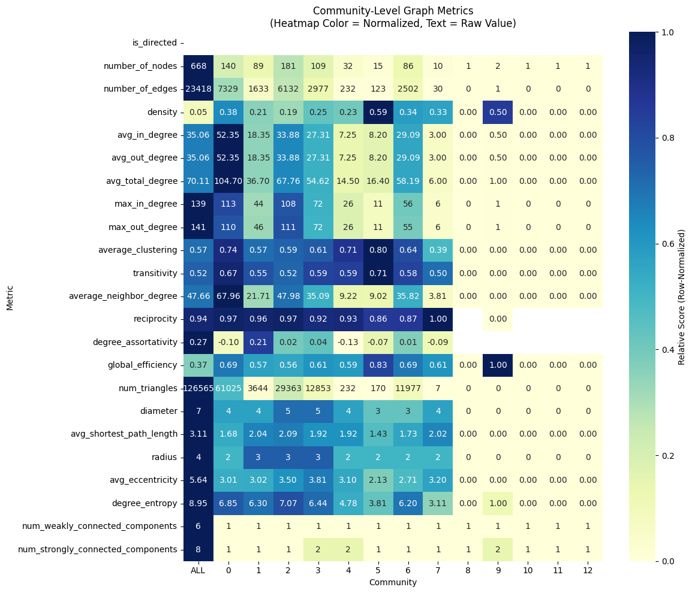
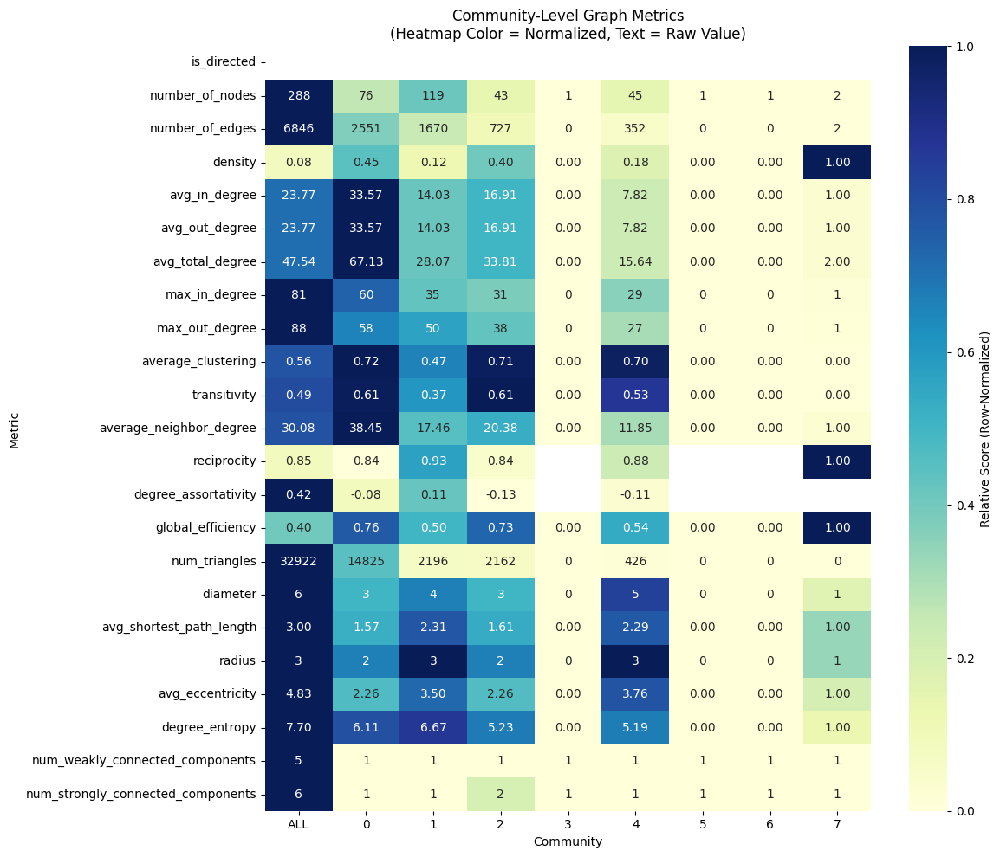
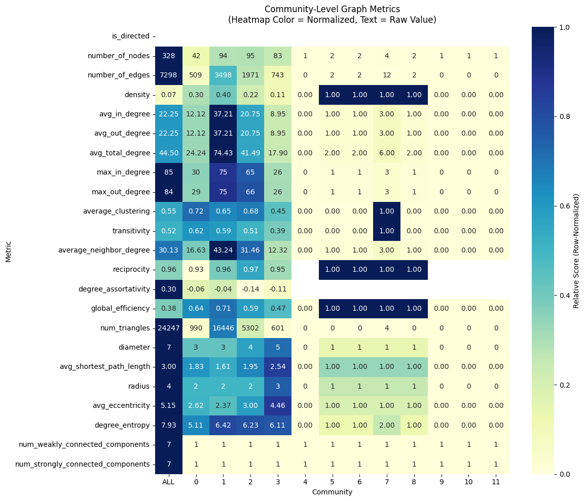
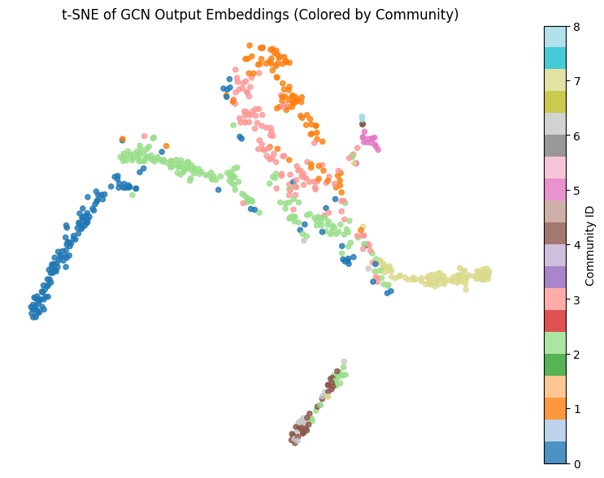
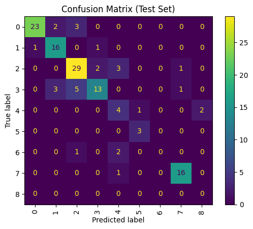

This project explores the structure of my Instagram social graph by identifying and analyzing the following relationships between my followers. I focused primarily on my own account but also examined the networks of my sister and roommate for comparison. The analysis integrates web scraping, network science, and graph neural networks (GNNs) to reveal community structures, central users, and latent social patterns. My goals were to produce compelling visualizations, compute both local and global network statistics, and demonstrate how a social graph can be leveraged for predictive modeling using GNNs.
Code for the full pipeline is available on GitHub: instagram_network_analysis. The primary analysis is in the Jupyter notebook graph_vis3.ipynb, which contains detailed visualizations and metric computations. This project was originally inspired by a now-defunct Wolfram Alpha tool that visualized Facebook friend graphs. I also referenced Max Impiessen's blog post, but ultimately rewrote the entire codebase to adapt to Instagram's current API limitations and modern scraping tools like Playwright.
The first major challenge was extracting data from Instagram, a platform without public apis for my purpose and well known for aggressive anti-scraping mechanisms. Early efforts using tools like Selenium failed due to dynamic content loading, long load times, and bot detection. I also experimented with Instaloader, a CLI tool tailored for Instagram, but it was too frequently throttled and lacked the flexibility to capture mutual connection data at scale.
I ultimately switched to Playwright, a modern headless browser automation tool that better mimics real user behavior. Even with Playwright, I faced significant rate-limiting after scraping a few dozen users. To make scraping sustainable, I implemented randomized delays, robust error handling, and progressive data checkpointing.
The core dataset consisted of all of the users who both followed me and I followed them. Then I found each user's "following" list — that is, who they follow on Instagram. I crawled a user's following list until no more users from my mutuals list were showing up. This optimization allowed me to reduce the amount of time to scrape each user, instead of having to scrape the entire following list. This data was used to build a directed graph, where an edge from A to B indicates that user A follows user B. Mutual connections were identified as reciprocal edges. This adjacency information was stored in JSON format and served as the basis for all further graph analysis and modeling.
Due to API limitations and the need to avoid detection, I restricted the scope of the data. Ideally, I would have scraped all followers for each user, but this was not feasible. Instead, I focused on a smaller sample centered around my own network to ensure the data remained tractable, interpretable, and relevant. This design choice allowed for a more focused analysis of mutual ties and community overlap within a manageable subset of Instagram.
Once the raw data was collected, the next step was to construct a network representation of the Instagram graph. Using NetworkX, I built a directed graph where nodes represent individual users and edges represent follow relationships. To visualize the graph meaningfully, I applied Graphviz's scalable force-directed layout algorithm, which is particularly effective for displaying organic structures with natural clusters.
To uncover community structures within the graph, I used the Louvain community detection algorithm. This modularity-based method grouped users into communities based on follow patterns, revealing sub-networks that often reflected real-life social circles such as college friends, coworkers, or sports league teammates.
Initially, I explored using Dash and Dash Cytoscape to create an interactive visualization with filtering and community highlighting features. While powerful, hosting a Dash app proved difficult on a static website. I ultimately opted for Pyvis, which provided smooth, interactive, embeddable HTML graphs without requiring a server backend. This made it easier to share visualizations and integrate them into my portfolio.
With the graph constructed, I calculated a variety of node-level ("local") metrics to better understand each user's position within the network. These statistics offer insight into individual influence, social reach, and structural roles within the graph. This part of the project was particularly engaging because it allowed me to see how my friends functioned in the broader social structure.
Below is a leaderboard of the top users in each metric, shown with an ASCII bar to represent normalized values. These rankings illustrate the diversity of roles different users play in the network — from connectors and hubs to tightly clustered community members.
Full ASCII Leaderboard (Sorted Columns):
degree_centrality in_degree_centrality out_degree_centrality closeness_centrality betweenness_centrality pagerank load_centrality hits_hub hits_auth clustering triangles eigenvector_centrality square_clustering
itsthejukeofyork: 0.4198 [##########] itsthejukeofyork: 0.2084 [##########] itsthejukeofyork: 0.2114 [##########] itsthejukeofyork: 0.4802 [##########] itsthejukeofyork: 0.2079 [##########] itsthejukeofyork: 0.0053 [##########] itsthejukeofyork: 0.1964 [##########] ruopuj22: 0.0111 [##########] greilly16: 0.0112 [##########] itskellyrac: 1.0000 [##########] greilly16: 3528.0000 [##########] greilly16: 0.1380 [##########] helen_girod: 0.8627 [##########]
willbrodner: 0.3793 [#########-] willbrodner: 0.1889 [#########-] willbrodner: 0.1904 [#########-] imalittleman_ish: 0.4392 [#########-] abigail.pease: 0.1680 [########--] ec__davis: 0.0046 [########--] abigail.pease: 0.1715 [########--] greilly16: 0.0110 [#########-] ruopuj22: 0.0112 [#########-] collins.elizabetha: 1.0000 [##########] ruopuj22: 3462.0000 [#########-] ruopuj22: 0.1376 [#########-] collins.elizabetha: 0.7182 [########--]
ruopuj22: 0.3748 [########--] ruopuj22: 0.1874 [########--] ruopuj22: 0.1874 [########--] abigail.pease: 0.4377 [#########-] ec__davis: 0.1366 [######----] abigail.pease: 0.0045 [########--] ec__davis: 0.1228 [######----] willbrodner: 0.0110 [#########-] willbrodner: 0.0109 [#########-] mira_beans: 1.0000 [##########] willbrodner: 3453.0000 [#########-] willbrodner: 0.1348 [#########-] cheesedoodle.lilwingwongwang: 0.5936 [######----]
greilly16: 0.3673 [########--] greilly16: 0.1844 [########--] greilly16: 0.1829 [########--] ec__davis: 0.4325 [#########-] sam.4.samm: 0.0916 [####------] sam.4.samm: 0.0045 [########--] sam.4.samm: 0.0873 [####------] grant__mak: 0.0108 [#########-] grant__mak: 0.0108 [#########-] dakshaat: 1.0000 [##########] grant__mak: 3322.0000 [#########-] grant__mak: 0.1334 [#########-] harrycondonjr: 0.5935 [######----]
wyatt_jernigan: 0.3613 [########--] wyatt_jernigan: 0.1814 [########--] wyatt_jernigan: 0.1799 [########--] kristieskim: 0.4266 [########--] nlat98: 0.0756 [###-------] imalittleman_ish: 0.0040 [#######---] nlat98: 0.0714 [###-------] jferrante21: 0.0107 [#########-] wyatt_jernigan: 0.0107 [#########-] zerotobrooklyn: 1.0000 [##########] wyatt_jernigan: 3273.0000 [#########-] a_global_globule: 0.1314 [#########-] maddiewooood: 0.5935 [######----]
grant__mak: 0.3583 [########--] grant__mak: 0.1814 [########--] grant__mak: 0.1769 [########--] charliedracos: 0.4178 [########--] imalittleman_ish: 0.0674 [###-------] kristieskim: 0.0040 [#######---] imalittleman_ish: 0.0673 [###-------] a_global_globule: 0.0107 [#########-] jasonbrovich: 0.0106 [#########-] amberyil: 1.0000 [##########] jferrante21: 3225.0000 [#########-] wyatt_jernigan: 0.1312 [#########-] chibbs50: 0.5607 [######----]
imalittleman_ish: 0.3418 [########--] imalittleman_ish: 0.1739 [########--] jferrante21: 0.1739 [########--] culbertalex: 0.4160 [########--] kristieskim: 0.0556 [##--------] willbrodner: 0.0039 [#######---] kristieskim: 0.0571 [##--------] wyatt_jernigan: 0.0105 [#########-] a_global_globule: 0.0106 [#########-] maddieolive: 1.0000 [##########] a_global_globule: 3220.0000 [#########-] jasonbrovich: 0.1312 [#########-] kogabeatz: 0.5518 [######----]
jasonbrovich: 0.3358 [########--] jasonbrovich: 0.1694 [########--] imalittleman_ish: 0.1679 [#######---] kyle.ockerman: 0.4100 [########--] canosynapse: 0.0306 [#---------] grant__mak: 0.0038 [#######---] canosynapse: 0.0310 [#---------] nicocrino: 0.0104 [#########-] d_munt_: 0.0106 [#########-] lhaliko: 1.0000 [##########] jasonbrovich: 3148.0000 [########--] d_munt_: 0.1301 [#########-] __mlilli: 0.5401 [######----]
a_global_globule: 0.3313 [#######---] a_global_globule: 0.1649 [#######---] sam.4.samm: 0.1679 [#######---] rachels_letters: 0.4092 [########--] alvamao: 0.0296 [#---------] ruopuj22: 0.0037 [######----] alvamao: 0.0290 [#---------] jasonbrovich: 0.0104 [#########-] akib_35: 0.0101 [#########-] selmonious_patronious: 1.0000 [##########] nicocrino: 3129.0000 [########--] bazefferton: 0.1248 [#########-] grantgreene97: 0.5398 [######----]
sam.4.samm: 0.3313 [#######---] sam.4.samm: 0.1634 [#######---] a_global_globule: 0.1664 [#######---] donde_esta_ban: 0.4087 [########--] hunterhutch: 0.0270 [#---------] greilly16: 0.0037 [######----] hunterhutch: 0.0288 [#---------] d_munt_: 0.0103 [#########-] bazefferton: 0.0101 [########--] cindystee: 1.0000 [##########] d_munt_: 3121.0000 [########--] kabewebster: 0.1246 [#########-] mermcv: 0.5346 [######----]
jferrante21: 0.3223 [#######---] conradical1309: 0.1634 [#######---] jasonbrovich: 0.1664 [#######---] mollsprobs: 0.4066 [########--] charliedracos: 0.0250 [#---------] lesbiancedar: 0.0037 [######----] charliedracos: 0.0286 [#---------] kabewebster: 0.0102 [#########-] kabewebster: 0.0101 [########--] clemsonkeri: 1.0000 [##########] vedderrise: 2956.0000 [########--] nicocrino: 0.1242 [#########-] sydneycolee: 0.5199 [######----]
winstonyau99: 0.3193 [#######---] winstonyau99: 0.1604 [#######---] winstonyau99: 0.1589 [#######---] grant__mak: 0.4059 [########--] martin_cala: 0.0243 [#---------] wyatt_jernigan: 0.0037 [######----] nickynickynickyt: 0.0231 [#---------] mitchberger106: 0.0099 [########--] conradmitchell465: 0.0101 [########--] ariscumara: 1.0000 [##########] kabewebster: 2933.0000 [########--] akib_35: 0.1240 [########--] dj_stxtch: 0.5152 [#####-----]
d_munt_: 0.3163 [#######---] d_munt_: 0.1589 [#######---] d_munt_: 0.1574 [#######---] winstonyau99: 0.4044 [########--] nickynickynickyt: 0.0229 [#---------] conradical1309: 0.0036 [######----] martin_cala: 0.0226 [#---------] vedderrise: 0.0098 [########--] nicocrino: 0.0101 [########--] elizabethkattt: 1.0000 [##########] conradmitchell465: 2921.0000 [########--] adhuffie: 0.1239 [########--] chin4dawin: 0.5128 [#####-----]
nickhibshman: 0.3133 [#######---] nickhibshman: 0.1589 [#######---] nickhibshman: 0.1544 [#######---] conradical1309: 0.4041 [########--] mollsprobs: 0.0228 [#---------] annag.g: 0.0036 [######----] culbertalex: 0.0225 [#---------] andysmithereens: 0.0097 [########--] adhuffie: 0.0100 [########--] kc.bergman: 1.0000 [##########] adhuffie: 2889.0000 [########--] conradmitchell465: 0.1238 [########--] jordynkapis: 0.5110 [#####-----]
conradical1309: 0.3103 [#######---] charliedracos: 0.1544 [#######---] nicocrino: 0.1544 [#######---] lordhavemorcy: 0.4034 [########--] culbertalex: 0.0215 [#---------] mo_ackerman: 0.0035 [######----] mollsprobs: 0.0214 [#---------] adhuffie: 0.0097 [########--] charliedracos: 0.0100 [########--] emmvlea: 1.0000 [##########] bazefferton: 2856.0000 [########--] charliedracos: 0.1237 [########--] raruller: 0.5079 [#####-----]
culbertalex: 0.3043 [#######---] adhuffie: 0.1529 [#######---] culbertalex: 0.1529 [#######---] chipsiduke: 0.4034 [########--] maggieeluong: 0.0213 [#---------] forman.katie: 0.0035 [######----] maggieeluong: 0.0207 [#---------] conradmitchell465: 0.0097 [########--] nickhibshman: 0.0099 [########--] r_doubs: 1.0000 [##########] akib_35: 2836.0000 [########--] mitchberger106: 0.1217 [########--] blexisvs: 0.5060 [#####-----]
nicocrino: 0.3028 [#######---] bazefferton: 0.1514 [#######---] jhg1217: 0.1499 [#######---] wyatt_jernigan: 0.4031 [########--] pingshan.zhang: 0.0199 [----------] jasonbrovich: 0.0035 [######----] pingshan.zhang: 0.0204 [#---------] charliedracos: 0.0097 [########--] mitchberger106: 0.0099 [########--] cardboardchopsticks: 1.0000 [##########] jmangold11: 2831.0000 [########--] nickhibshman: 0.1212 [########--] undependentme: 0.5057 [#####-----]
charliedracos: 0.3028 [#######---] culbertalex: 0.1514 [#######---] alex_weckingball: 0.1499 [#######---] jillian.taylor: 0.4004 [########--] christiana.maimone: 0.0184 [----------] winstonyau99: 0.0034 [######----] torguh: 0.0184 [----------] jmangold11: 0.0096 [########--] vedderrise: 0.0099 [########--] sushionthemoon: 1.0000 [##########] mitchberger106: 2820.0000 [#######---] vedderrise: 0.1212 [########--] nickmandalari: 0.5022 [#####-----]
adhuffie: 0.2999 [#######---] akib_35: 0.1499 [#######---] qferrante: 0.1484 [#######---] jessicadilustro: 0.4002 [########--] torguh: 0.0178 [----------] charliedracos: 0.0033 [######----] winstonyau99: 0.0180 [----------] nickhibshman: 0.0095 [########--] imalittleman_ish: 0.0098 [########--] earlofcleveland: 1.0000 [##########] charliedracos: 2798.0000 [#######---] imalittleman_ish: 0.1208 [########--] bpecial_bops: 0.5006 [#####-----]
qferrante: 0.2984 [#######---] qferrante: 0.1499 [#######---] charliedracos: 0.1484 [#######---] ruopuj22: 0.3992 [########--] a.ustinhua: 0.0172 [----------] qferrante: 0.0033 [######----] christiana.maimone: 0.0178 [----------] imalittleman_ish: 0.0095 [########--] jmangold11: 0.0097 [########--] lead_foot_betty: 1.0000 [##########] nickhibshman: 2784.0000 [#######---] qferrante: 0.1197 [########--] andrewdoesstuff4: 0.4973 [#####-----]
jhg1217: 0.2969 [#######---] conradmitchell465: 0.1484 [#######---] kabewebster: 0.1484 [#######---] a_global_globule: 0.3985 [########--] winstonyau99: 0.0168 [----------] christiana.maimone: 0.0033 [######----] a.ustinhua: 0.0177 [----------] jhg1217: 0.0095 [########--] qferrante: 0.0097 [########--] elizabethdavismusic: 1.0000 [##########] andysmithereens: 2695.0000 [#######---] jmangold11: 0.1193 [########--] noah.citron: 0.4970 [#####-----]
kristieskim: 0.2954 [#######---] jferrante21: 0.1484 [#######---] lesbiancedar: 0.1484 [#######---] bridget_w_: 0.3985 [########--] stoked.18: 0.0158 [----------] you_are_aurorable: 0.0033 [######----] lesbiancedar: 0.0173 [----------] bazefferton: 0.0095 [########--] alexblumenstock: 0.0095 [########--] s.jaspal14: 1.0000 [##########] alexblumenstock: 2670.0000 [#######---] alexblumenstock: 0.1167 [########--] mad.lad.crad: 0.4930 [#####-----]
...
tiffiniez: 0.0000 [----------] oliviamckinley_: 0.0000 [----------] tiffiniez: 0.0000 [----------] _spinsta_666: 0.0000 [----------] earlofcleveland: 0.0000 [----------] yujiasun31: 0.0002 [----------] toph.and.kublai: 0.0000 [----------] _spinsta_666: -0.0000 [----------] oliviamckinley_: -0.0000 [----------] thaidermath: 0.0000 [----------] logandiener: 0.0000 [----------] thaidermath: 0.0000 [----------] lifansers: 0.0000 [----------]
_spinsta_666: 0.0000 [----------] tiffiniez: 0.0000 [----------] baejaeyun7353: 0.0000 [----------] thaidermath: 0.0000 [----------] r_doubs: 0.0000 [----------] _spinsta_666: 0.0002 [----------] oliviamckinley_: 0.0000 [----------] oliviamckinley_: -0.0000 [----------] tiffiniez: -0.0000 [----------] oliviamckinley_: 0.0000 [----------] lifansers: 0.0000 [----------] tiffiniez: 0.0000 [----------] elizabethdavismusic: 0.0000 [----------]
oliviamckinley_: 0.0000 [----------] _spinsta_666: 0.0000 [----------] apoutfitarchive: 0.0000 [----------] yujiasun31: 0.0000 [----------] selmonious_patronious: 0.0000 [----------] tiffiniez: 0.0002 [----------] jaunts_of_jenny: 0.0000 [----------] apoutfitarchive: -0.0000 [----------] _spinsta_666: -0.0000 [----------] cookingwithklaassen: 0.0000 [----------] thekarozee: 0.0000 [----------] yujiasun31: 0.0000 [----------] myacarrizosa: 0.0000 [----------]
yujiasun31: 0.0000 [----------] thaidermath: 0.0000 [----------] oliviamckinley_: 0.0000 [----------] tiffiniez: 0.0000 [----------] lead_foot_betty: 0.0000 [----------] oliviamckinley_: 0.0002 [----------] cliodhnawl: 0.0000 [----------] tiffiniez: -0.0000 [----------] thaidermath: -0.0000 [----------] yujiasun31: 0.0000 [----------] oliviamckinley_: 0.0000 [----------] oliviamckinley_: 0.0000 [----------] mle_quinn: 0.0000 [----------]
A full CSV export of all local metrics and community IDs is available here.
For example, my college partner itsthejukeofyork ranks highest in multiple categories including degree centrality and PageRank — reflecting their central position in my college-era social life. Similarly, ec__davis stands out for her cross-community ties, likely reflecting the overlapping roles she plays as both a college friend and a teammate in a queer sports league. My sister, abigail.pease, appears as a quiet connector: not highly active on Instagram but linked to many disparate parts of my social life.
Many of the other top-ranked users are simply very active Instagram users who function as hubs within specific community clusters.
After analyzing individual users, I turned to global metrics to assess the overall structure of the network. These statistics describe connectivity, cohesion, and macro-level patterns that emerge from the graph. Using NetworkX, I computed the following key metrics:
These metrics help compare different parts of the network and identify unique structures across communities. Because I only had access to three personal networks (mine, my sister’s, and my roommate’s), I also computed these global statistics at the community level within each graph to better compare subsets of users.
One interesting finding: the overall network had a reciprocity of 0.94, meaning 94% of edges were mutual. This aligns with expectations — most Instagram relationships between close connections tend to be bidirectional. While slightly lower than I anticipated, this could reflect data loss due to scraping inconsistencies. Importantly, errors in scraping tend to affect edge direction rather than existence, so the network’s topology remains relatively robust.
Another insight came from comparing communities. The largest community (181 users) wasn’t the most interconnected. A smaller community (140 users) showed a higher edge count and clustering coefficient. Upon inspection, the denser group corresponded to a tight-knit college cohort, while the larger one represented my adult sports league — a broader, less densely linked group. This pattern supports the Louvain algorithm’s ability to detect denser substructures within broader social groups.
Below is a heatmap of community-level global metrics within my network, followed by similar visualizations for my sister’s and roommate’s networks. Despite different social contexts, all three graphs exhibit similar structural properties: diameter between 6–7, average clustering around 0.55–0.57, and high reciprocity. I’m curious whether this consistency reflects a broader pattern for mid-20s Instagram users — or just our specific circles. I’d love to compare more datasets if available.
For comparison, here are heatmaps for: Abigail’s Network and Austin’s Network.
  To evaluate how well the graph structure alone could predict user communities, I trained a Graph Convolutional Network (GCN) to perform node classification using community labels derived from Louvain community detection as targets. I first filtered out tiny communities (fewer than two users), re-ran Louvain on the cleaned graph, and computed a set of structural node features: in-degree, out-degree, total degree, clustering coefficient, PageRank, and a normalized community ID. These features were standardized and converted into a PyTorch Geometric Data object.
The model architecture consisted of a two-layer GCN with ReLU activation and a hidden layer of 16 nodes, followed by a log-softmax output for multiclass classification. To preserve label distribution across splits, I used stratified sampling to divide the nodes into training and test sets. The model was trained for 100 epochs using negative log-likelihood loss, with performance tracked via both training loss and test set accuracy.
To interpret the model’s learned embeddings, I used t-SNE to project the output logits into 2D space and color-coded the points by their true community labels. I also generated a confusion matrix and calculated per-community accuracy scores to assess which communities were most consistently predicted and which remained ambiguous.
 
Per-Community Accuracy:
Community 0: 82.14%
Community 1: 88.89%
Community 2: 82.86%
Community 3: 59.09%
Community 4: 57.14%
Community 5: 100.00%
Community 6: 0.00%
Community 7: 94.12%
I trained a Graph Convolutional Network (GCN) for link prediction—the task of inferring whether an edge (i.e., a relationship) exists between two users in a social network graph. Using PyTorch Geometric’s RandomLinkSplit transform, I split the graph’s edges into training, validation, and test sets, each including both positive (true) and negative (sampled nonexistent) edges to enable supervised binary classification.
The model consisted of a two-layer GCN encoder with a hidden dimension of 32, which learned node embeddings based on structural features and neighborhood context. To predict links, I used a dot product decoder that computes the similarity between node embeddings. The training objective was binary cross-entropy loss over the predicted edge probabilities, optimized for 200 epochs using the Adam optimizer.
Evaluation was performed on held-out edges using AUC (Area Under the ROC Curve) and Average Precision—both standard metrics for imbalanced binary classification. The resulting node embeddings and predicted edge scores can be used to uncover missing or likely future connections in the network.
🔍 Predicted Link Analysis
🔝 Top 10 Predicted Links:
user1 user2 score label
nicocrino a_global_globule 0.999760 1
vedderrise nicocrino 0.999738 1
grant__mak nicocrino 0.999654 1
vanessadnk gulago 0.999629 1
nicocrino mitchberger106 0.999603 1
kabewebster conradmitchell465 0.999599 1
willbrodner d_munt_ 0.999595 1
alexblumenstock a_global_globule 0.999564 1
nicocrino jhg1217 0.999514 1
joro214 vanessadnk 0.999501 1
❌ Top False Positives (Predicted link, doesn’t exist):
user1 user2 score label
jimliu905 jhg1217 0.997747 0
tonyteleky winstonyau99 0.992560 0
clamzhaoder jeremysfertig 0.989794 0
mle_quinn minhanhtoo 0.988810 0
chipsiduke thuantrn 0.988103 0
⚠️ Top False Negatives (True link, model missed it):
user1 user2 score label
nicocrino its_knott_zach 0.284143 1
nikhilvdk nickynickynickyt 0.286394 1
abigail.pease itsthejukeofyork 0.289419 1
callie_huffmannn sajkader 0.292563 1
evelyngarciaphotos a_global_globule 0.304193 1
This project was a deep dive into the structure and predictive modeling of social networks, grounded in real Instagram data. From scraping and cleaning data, to constructing and analyzing network graphs, to applying machine learning with GNNs, each step provided valuable insights into how social structures can be quantitatively explored and visualized.
I gained hands-on experience with network analysis tools like NetworkX and Pyvis, learned to navigate the challenges of web scraping at scale with Playwright, and applied graph neural networks using PyTorch Geometric for both classification and link prediction tasks. In particular, the ability of the GNN to learn from graph topology alone — without any textual or image-based features — underscored the strength of structural data in modeling social relationships.
The biggest limitation was access to data. Instagram’s restrictions on scraping and API usage limited both the size and diversity of networks I could analyze. Expanding this work to include more users — and especially users outside of my direct social circles — would allow for stronger generalization and more meaningful comparisons. I’m also interested in combining this type of structural analysis with other modalities, such as post metadata or profile descriptions, to create richer models of online social behavior.
Looking ahead, I’d love to extend this pipeline to other platforms or public datasets where data collection is more feasible and less ethically fraught. Social graphs have immense potential in fields like recommendation systems, behavioral analysis, and even community health. If you know of any interesting network data — or are interested in collaborating — feel free to reach out!